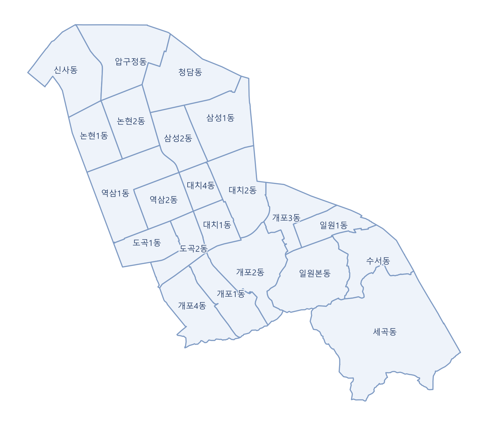

행정동 경계

강남구 행정동 경계
활용 목적
형평성을 평가하는 단위로 행정동을 사용했다. 형평성 MCLP와 최저 행정동 커버율 지표가 이 경계를 기준으로 계산된다.
강남구 행정동
22
개
동별 기존 쉼터
1~15
곳
쉼터가 적은 동
신사동
1곳
대치1동
1곳
쉼터가 많은 동
세곡동
15곳
역삼1동
11곳
자료: 통계지리정보서비스(SGIS) 강남구 행정동 경계, 서울시 무더위쉼터(OA-21065)